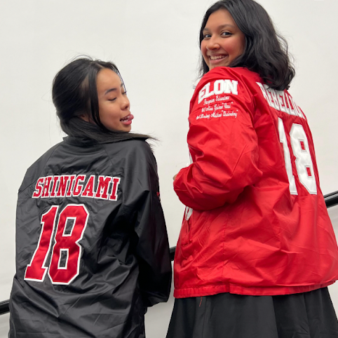

HUSTLE U.
The Side Hustles Keeping College Dreams Alive
College students aren’t just studying–they’re surviving. An average college education will cost you $153,000 for four years. Here’s why more and more young people are hustling multiple jobs just to stay afloat.
In today’s educational landscape, the cost of attending college is higher than ever. According to the Education Data Initiative, the average yearly cost of a four-year degree is $27,146, not including food and housing, tacking on another $11,124. This financial burden compels many undergraduate and graduate students to seek part- or full-time employment while pursuing their degrees.
At Elon University, a small private school in North Carolina, 19-year-old Bella Pelini lives that reality.
A sophomore majoring in Cinema and Television Arts, Bella balances two part-time jobs, freelance social media work, and a full 16-credit-hour course load. Her phone buzzes constantly with calendar reminders–from sorority events and club meetings to editing gigs and FaceTime calls with her family and friends.
Pictured left to right: Jo Velasco ‘27 & Bella Pelini ‘27 from @elon_bella
“I don’t think people realize how much we sacrifice to afford being here.” - Bella Pelini ‘27
“I’m working about 35 to 40 hours a week, which is wild on top of school,“ Bella shares. While Bella received a full-tuition scholarship through Elon’s selective Odeyssey Program–a leadership and merit-based initiative for underrepresented students–it doesn’t cover the full cost of living. Elon University’s 2024-25 estimated cost for tuition, housing, and meals is projected at $63,242 per year. Leaving students like Bella to fill in the gaps.
And she’s not alone. National data from the National Center for Educational Statistics shows that 70% of part-time students and 40% of full-time students work while at university. The shift toward balancing work with academic responsibilities reflects a broader trend in higher education, where students are increasingly pressured to manage both financial and academic commitments.
Beyond jobs and academics, Bella remains deeply involved with campus life. She is vice president and a member of the Asian-interest sorority Kappa Phi Lambda and serves as an Elon University ambassador on Instagram under the handle @elon_bella.
Bella's Average Day
Scroll alongside each timeline to better understand how Bella splits her time between working, academics, clubs, organizations, and leisure.
Color Codes
However, the constant hustle takes a toll. “It’s hard to ask for help when you feel like everyone around you works just as hard,” Bella admits. “There’s this unspoken pressure to just keep going.” Many students outside of Elon University face the same struggle–navigating a complex web of responsibilities while trying to maintain personal relationships and self-care. This cycle leaves little time for mental rest, which can be detrimental to health and academic performance.
The financial pressure on undergraduates isn’t without consequences. Studies show that students working more than 20 hours a week experience a significant drop in academic performance and increased mental health struggles. First-generation students or those from lower-income families often face added stress from impostor syndrome and a lack of institutional support.
Bella’s story reflects a broader issue: the increasing normalization of students overextending themselves to afford college. But that shouldn’t be the expectation. The question we must ask is whether higher education should be a system that demands exhaustion in exchange for learning and growth.
Private institutions like Elon University which contributes over $695 million annually to North Carolina’s economy, can work to expand on-campus paying jobs and resources that align with students’ long-term goals. Internships, research positions, and digital work that fit around class schedules should be more accessible. Mental health resources and financial literacy programs for students balancing both light and heavy workloads are just as crucial.
On a national level, increased Pell Grant funding, reduced interest on student loans, and policies supporting tuition-free college options could ease the burden on students from all backgrounds.
The future of higher education shouldn’t depend on how much a student can endure. It should reflect on how much a student can grow, intellectually, emotionally, and creatively, without sacrificing their well-being.
Students all across America are hustling just like Bella to push forward with their education from public schools like University of Wilmington to ivy leagues like the University of Pennsylvania. Sacrificing mental and physical health to achieve success shouldn’t become the new normal. For many undergraduates, pursuing higher education is a time for personal growth. With the right resources and systemic changes, higher education can work towards becoming more attainable, allowing students to thrive without the overwhelming financial and emotional pressures that currently plague them.

To share your own story or support students like Bella, Gabriella, Rainey, and Bria, use the hashtag #HustleU By speaking out, we can normalize transparency, advocate for structural change, and uplift the voices of those hustling hard just to get by.